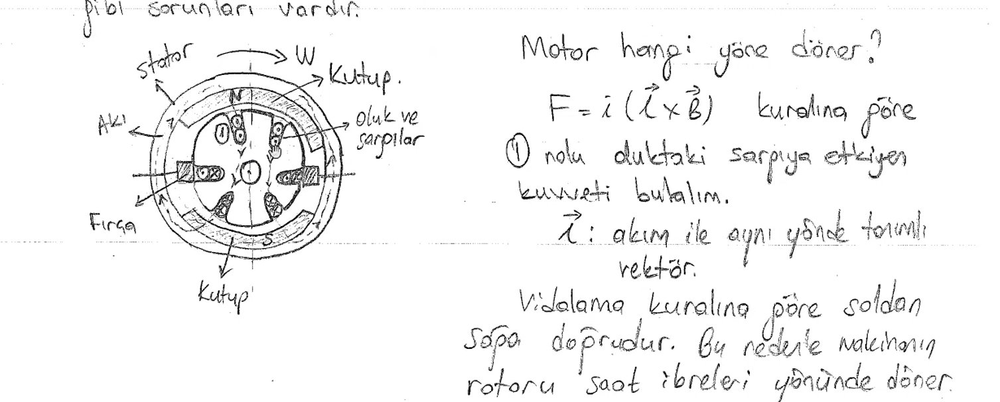

Stator Manyetik Kutupları
Stator üzerindeki sargılardan akım geçtiğinde elektro-mıknatıs kutupları (N ve S) oluşur. Manyetik akı çizgileri daima Kuzey (N) kutbundan çıkıp Güney (S) kutbuna doğru akar.
Oluk İnceleme & Dönüş Yönü
Sınav DeneyiÖğrenci bir oluğa tıklayarak akım işaretini değiştirsin ve o iletkene etki eden kuvvet ile toplam momentin nasıl değiştiğini anında görsün.
Elektriksel & Mekanik Sürüş
3D Vektörel Görselleştirme
Ders Notundaki Motorun Dijital İkizi: Manyetik Alan, Akım & Vidalama Kuralı İspatı
Bu modülde, Dr. Hakan Kahveci'nin ders notunun ilk sayfasında yer alan "Motor hangi yöne döner?" sorusu, orijinal el yazısı çizimi ile etkileşimli dijital modeli yan yana getirilerek incelenmektedir. Vidalama kuralı ve vektörel çarpım denklemleri bağımsız olarak doğrulanmaktadır.
Orijinal El Yazısı Ders Notu (Sayfa 1)
Doğrulanmış Kaynak
Etkileşimli Dijital İkiz (2D Kesit)
DÖNÜŞ: CW (Saat Yönü)İki Ayrı Sağ El Kuralı Öğrenme Modu
Başparmak iletkendeki akım yönünü ($\vec{I}$, $\odot$ veya $\otimes$) gösterdiğinde; kıvrılan dört parmak iletkenin etrafında oluşan dairesel manyetik alan çizgilerinin ($\vec{B}_{oz}$) dolanım yönünü gösterir. Bu dairesel alan, statorun ana alanını bir tarafta güçlendirirken diğer tarafta zayıflatır. İletken, manyetik alanın yoğun olduğu taraftan zayıf olduğu tarafa doğru itilir. Lorentz kuvvetinin fiziksel kaynağı tam olarak bu alan dengesizliğidir!
Sağ elin dört parmağı rotorun dönme yönünde (saat yönünde) kıvrıldığında, dik açılan başparmak mil ekseninde sayfa içine ($\otimes$, $-z$) yönelen açısal hız vektörünü ($\vec{\omega}$) gösterir. Kritik Mühendislik Ayrımı: Akımın $\odot$ / $\otimes$ sembolü ile açısal hızın $\odot$ / $\otimes$ sembolü tamamen farklı fiziksel büyüklüklerdir!
Vektörel Çarpım & Moment Hesabı
DC Motor Elektriksel & Mekanik Dinamikleri ve Çok Kanallı Osiloskop
Bu modül, motorun yalnızca sabit hızda dönen bir animasyon olmadığını; endüvi devresi diferansiyel denklemi ile rotorun hareket denkleminin anlık sayısal entegrasyonu (Euler/Runge-Kutta) ile çalışan gerçek zamanlı bir fizik motorudur. Kalkış akımı ($I_{kalkis} = V_a/R_a$), eylemsizlik momenti ($J$), zıt EMK ($E_a = K_e\omega$) ve ani yük basamakları dinamik olarak hesaplanır.
Kanal 1: Endüvi Akımı $i_a(t)$ [Amper]
Kalkış Sıçraması & Kararlı DurumKanal 2: Mekanik Devir Sayısı $n(t)$ [d/d - RPM]
Hızlanma Eğrisi & Yük DüşümüKanal 3: Elektromanyetik Moment $T_e(t)$ vs Yük $T_L$ [N·m]
$T_e = K_t \cdot i_a$Kanal 4: Zıt EMK $E_a(t)$ [Volt] & Mekanik Güç $P_m(t)$ [Watt]
$E_a = K_e \cdot \omega$, $P_m = T_e \cdot \omega$Hızlı Dinamik Deney Senaryoları
Motor Fiziksel Eşdeğer Parametreleri
Motor Sürücü Devreleri: H-Köprüsü, PWM ve Üç Fazlı Evirici Laboratuvarı
Bu modülde motor sürücü devreleri yalnızca statik resimler değil; kullanıcının anahtarları bizzat açıp kapatabildiği, PWM doluluk oranını değiştirebildiği ve motorun hareketinin bu anahtarlarla senkron olarak değiştiği etkileşimli bir simülatördür.
Dört Bölge H-Köprüsü (H-Bridge Driver)
İLERİ SÜRÜŞ (S1 & S4 ON)Üniversal Motor Bağlantı & Yön Çevirici Şema
Defter Sayfa 30 AnaliziBLDC 6-Adım Elektronik Komütasyon & 120° Hall Sensörleri Laboratuvarı
Mekanik fırça-kollektörün yerini 120° elektriksel yerleşimli 3 Hall sensörü ($H_1, H_2, H_3$) ve 6 MOSFET'li evirici köprüsü alır. Her 60° elektriksel açıda ilgili iki faz iletime sokulur, bir faz boştadır (120° iletim).
3-Fazlı Evirici Köprüsü & Aktif İletim Yolları
Adım 1 ($A^+ B^-$)Hall Sensörleri Tablosu (120°)
| Adım | Açı | H1 | H2 | H3 | Aktif Faz |
|---|---|---|---|---|---|
| 1 | 0°-60° | 1 | 0 | 1 | A+ B- |
| 2 | 60°-120° | 1 | 0 | 0 | A+ C- |
| 3 | 120°-180° | 1 | 1 | 0 | B+ C- |
| 4 | 180°-240° | 0 | 1 | 0 | B+ A- |
| 5 | 240°-300° | 0 | 1 | 1 | C+ A- |
| 6 | 300°-360° | 0 | 0 | 1 | C+ B- |
Dijital Osiloskop: 3-Faz Yamuk Zıt EMK ($e_A, e_B, e_C$) ve Faz Akımları
Defter Sayfa 8 & 20 Osiloskop ÖlçümleriÜniversal Motor AC & DC Çalışma Davranışı, Empedans Üçgeni ve Dönüş Yönü
Üniversal motor, seri bağlı endüvi ve kutup sargıları sayesinde hem DC hem de AC şebekede dönebilen özel bir makinedir. AC şebekede akım yön değiştirince hem armatür akımı $I_a$ hem de kutup akısı $\Phi$ aynı anda tersine döndüğünden tork $T = k \cdot \Phi \cdot I_a \propto I_a^2$ daima pozitif kalır.
AC Gerilim Üçgeni (Fazör Diyagramı)
$$V_{ac}^2 = (E_a + IR)^2 + (IX_L)^2$$Sayfa 34-35 Problem Hesaplayıcısı
120V / 2000 d/d ÖrneğiServo Motorlar, Artımsal/Mutlak Enkoderler ve Resolver Laboratuvarı
Servo sistemlerde hassas konum ve hız geri beslemesi için kullanılan artımsal (incremental) optik enkoderler ile döner transformatör prensibiyle çalışan resolver algılayıcılarının dalga şekilleri ve çözünürlük hesapları.
Artımsal Enkoder Kuadratür Sinyalleri (A, B, Z)
CW (A, B'den 90° Önce)Resolver Modülasyonu & Açı Tespiti
Döner TransformatörAdım Motorları (Step Motors), Mikro Adımlama ve Frekans-Hız Laboratuvarı
Değişken Relüktanslı (VR), Sabit Mıknatıslı (PM) ve Hibrit (Hybrid) adım motorlarında faz uyarım sıraları ve adım açısı $\theta_s = \frac{360^\circ}{m \cdot N_r}$ bağıntısının doğrulanması.
Rotor Dişleri & Faz Sargıları Canlı Uyarma
Tam Adım (Full-Step)Adım Açısı & Frekans-Hız Hesaplayıcısı
Defter Sayfa 58-60 (Q5)Sınav Soruları Bankası, Adım Adım Akademik Çözümler & Dinamik Parametreler
Aşağıdaki sorular Dr. Hakan Kahveci'nin ders notlarından bire bir alınmış ve modellenmiştir. Öğrenci olarak ister çözümü gizleyip kendi kendinizi test edebilir, ister parametreleri değiştirerek yeni soru türetebilir, isterseniz "Simülatörde Göster" düğmesiyle verileri 3D laboratuvara aktarabilirsiniz.
Motor Hangi Yöne Döner? Manyetik Kutup ve Akım Vektörü ile Yön İspatı
Dr. Hakan Kahveci Notları: Sayfa 1 Birebir SoruŞekildeki 2 kutuplu DA makinesinde statorun üst kısmında N, alt kısmında S kutbu bulunmaktadır. Rotorun 1 nolu oluğundaki sargıdan sayfa düzleminden dışarı doğru ($\odot$) $I_1$ akımı, 2 nolu oluğundaki sargıdan ise sayfa düzlemine içeri doğru ($\otimes$) $I_2$ akımı akmaktadır.
a) 1 ve 2 nolu oluktaki sargılara etkiyen Lorentz kuvvetlerinin yönlerini vidalama kuralını kullanarak vektörel olarak bulunuz.
b) Rotorun hangi yöne (CW / CCW) döneceğini net döndürme momenti denklemini yazarak açıklayınız.
c) Besleme gerilimi ters çevrilirse dönüş yönü ne olur? Hem besleme hem manyetik kutuplar aynı anda ters çevrilirse ne olur?
BLDC 120° Hall Sinyalleri, Komütasyon Sektörü ve Evirici Durumu
Dr. Hakan Kahveci Notları: Sayfa 14-22 Birebir Soru3 fazlı, 120° elektriksel açıyla yerleştirilmiş Hall sensörlerine sahip bir BLDC motorda anlık Hall sensör lojik çıkışları $[H_1, H_2, H_3] = [1, 1, 0]$ olarak ölçülmüştür.
a) Rotor o anda elektriksel olarak kaç derece aralığındadır?
b) 6 transistörlü eviricide hangi anahtarlar iletimdedir? Hangi faz boştadır (floating)?
c) Motorun dönüş yönünü saat ibrelerinin tersine (CCW) çevirmek için eviriciye uygulanması gereken anahtarlama çifti nedir?
Üniversal Motorda AC vs DC Çalışma, Empedans Üçgeni ve Verim Hesabı
Dr. Hakan Kahveci Notları: Sayfa 34-35 Birebir SoruBir üniversal motor $V = 120\text{ V}, 60\text{ Hz}$ alternatif gerilim kaynağına bağlandığında şebekeden $I = 1.5\text{ A}$ akım çekmekte ve $n_{ac} = 2000\text{ d/d}$ hızla dönmektedir. Motorun toplam omik direnci $R = 20\ \Omega$, toplam endüktif reaktansı $X_L = 32\ \Omega$'dur.
a) AC çalışmada endüklenen zıt EMK ($E_{ac}$) ve güç katsayısını ($\cos\varphi$) bulunuz.
b) Motor aynı $120\text{ V}$ gerilimli bir DC kaynağa bağlandığında ve yine $1.5\text{ A}$ akım çektiğinde devir sayısı ($n_{dc}$) ne olur?
c) AC ve DC durumdaki verimleri karşılaştırınız.
Servo Enkoder Çözünürlüğü, Pals Frekansı ve Resolver Açı Tayini
Dr. Hakan Kahveci Notları: Sayfa 46-50 Birebir SoruBir servo motor miline 4096 PPR optik artımsal enkoder bağlanmıştır. Motor $n = 3000\text{ d/d}$ hızla dönmektedir.
a) Mekanik açısal çözünürlük ($\Delta\theta$) kaç derecedir?
b) Kuadratür 4X kenar sayımında tur başına toplam darbe sayısı kaçtır?
c) Çıkış pals frekansı ($f$) kaç kHz'dir?
d) Resolver stator sargılarında genlik oranı $V_{sin} / V_{cos} = 0.577$ ölçüldüğünde rotor açısı ($\theta$) nedir?
4 Fazlı 50 Dişli Hibrit Adım Motorunda Devir-Frekans ve Yarım Adım Dönüşümü
Dr. Hakan Kahveci Notları: Sayfa 58-60 Birebir Soru4 fazlı ($m = 4$), rotorunda 50 adet diş ($N_r = 50$) bulunan hibrit adım motoru kullanılmaktadır.
a) Tam adım modundaki adım açısını ($\theta_s$) ve bir turun adım sayısını ($S$) hesaplayınız.
b) $n = 1200\text{ d/d}$ hız için mikrodenetleyiciden uygulanması gereken adım frekansı ($f$) kaç kHz olmalıdır?
c) Motor yarım adım (half-step) moduna geçirilirse yeni adım açısı ve $1200\text{ d/d}$ için gereken frekans nedir?
Ders Kitabı, Notlar ve PDF Kaynak Yöneticisi
Bu modül, platforma bağlı ders notlarını listeler ve kullanıcının yeni ders notu (PDF/Görsel) yükleyip tarayıcı hafızasında (IndexedDB) kalıcı olarak saklayabilmesini sağlar. Dokümandaki sayfa bağlantılarına tıklayarak doğrudan ilgili simülasyona geçebilirsiniz.
Yeni Not / PDF Ekle
Kütüphanedeki Ders Dokümanları
Deftere Yaz: Altın Mühendislik Formülleri & Püf Noktalar
Sınavda çıkabilecek tüm kritik formüller, birimler ve türev bağıntıları aşağıda derli toplu olarak sunulmuştur. Fiziksel defterinize not alırken bu şemayı referans alabilirsiniz.